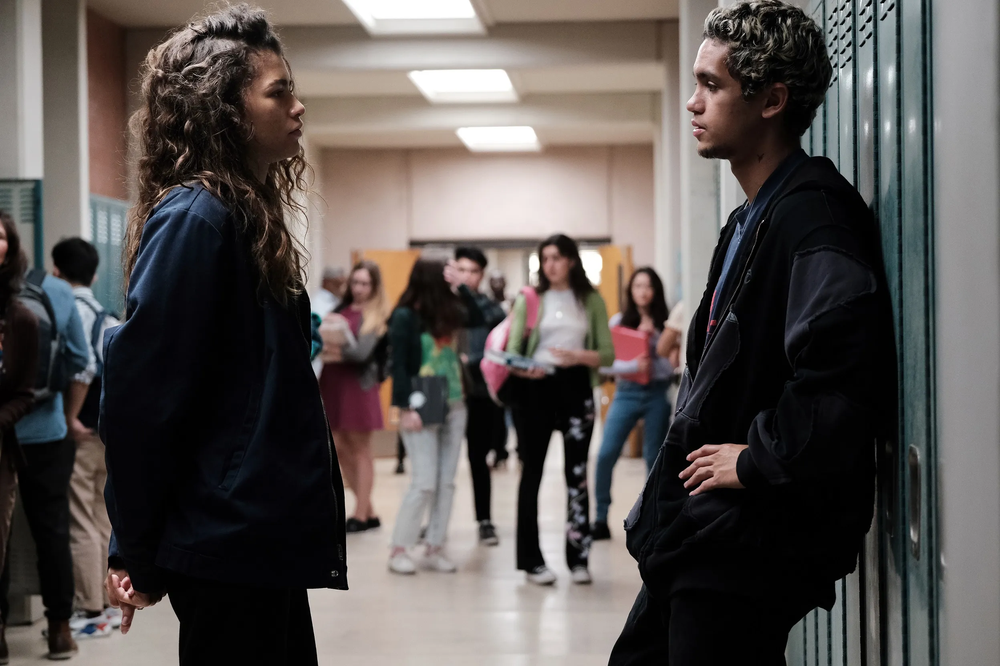

Temporada 1
Sinopse:
Rue, agora com 17 anos, acabou de voltar de uma internação em um hospital de reabilitação de drogas e não tem intenções imediatas de continuar vivendo uma vida livre de drogas. Uma recém-chegada à cidade, Jules, se apresenta a ela durante a última festa do ano letivo.
Temporada 2

Sinopse:
Já na segunda temporada, o foco da trama está voltado a relação da protagonista com seu vício e das questões individuais dos personagens, como o relacionamento abusivo de Cassi e o ex-namorado de sua melhor amiga, Nate e o desenvolvimento da personagem Lexi.
Personagens
- Zendaya (Rue Bennett)
- Hunter Schafer (Jules Vaughn)
- Jacob Elordi (Nate Jacobs)
- Alexa Demie (Maddy Perez)
- Maude Apatow (Lexi Howard)
- Angus Cloud (Fezco)
- Sydney Sweeney (Cassie Howard)
- Barbie Ferreira (Kat Hernandez)
- Algee Smith (Chris McKay)
- Javon Walton (Ashtray)
- Eric Dane (Cal Jacobs)
- Storm Reid (Gia Bennett)
- Austin Abrams (Ethan)
- Alanna Ubach (Suze)
- Tyler Chase (Custer)